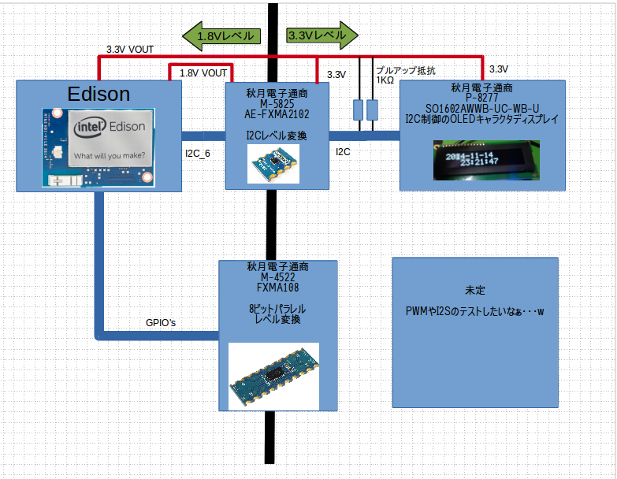
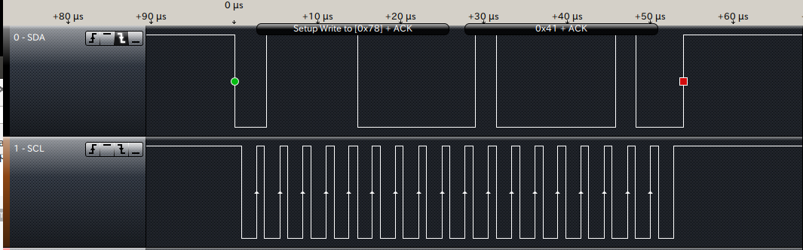

Edison のI2Cを試してみる¶


1.初めに¶
EdisonにはI2Cbusがあり、今までマイコンで相当苦労したI2CをEdisonで楽々に試せればいいなぁ～と思い、実際に使ってみることにしました。
今回、試しに制御を行ったのは、秋月電子通商で売られているOLEDディスプレイ（OLED液晶を液晶と呼ぶと怒られるので汗） に文字を出してみようと思います。
それにしても、EdisonでI2Cは簡単ではありませんでした。相当苦労した。結局、後述のロジアナをこの為に購入してやっと分かったので、 今回の記事は色々と体張ってます汗w
2. I2C制御の試験を行う上でのハードウェア¶
EdisonのIO回りはすべて1.8Vであるため、一般的なI2Cデバイスには直接接続出来ません。
そのため、一旦I2Cレベル変換を行い、デバイスに合わせたレベルで通信を行います。
今回使用したのが、秋月電子で発売されている[AE-FXMA2102] http://akizukidenshi.com/catalog/g/gM-05825/ です。
この他にも、[PCA9306]のモジュールも悪くありませんが、自分は基板に直接ハンダ付けをしたかったので、[AE-FXMA2102]を採用しました。
レベル変換ICのA側にはEdisonより1.8Vを供給し、B側にはEdisonより3.3Vを供給します。
これにより、Edison側は1.8vのI2C信号が、レベル変換ICを経由し3.3VのI2C信号として変換されます。
後日、回路図の方を作成する予定ですが、[AE-FXMA2102]に罠が2ヶ所あり、
- OEはHiにするとバスが有効になります。（A側のVCCに接続）未接続のままだとバスが閉じてます。
- B側にデバイスを接続する際はI2Cのバスをプルアップしてください。レベル変換モジュール上では行っていません。
ちょっとハマったけど、まとめたらそんな難しい話ではない。
3. EdisonのI/O回りのライブラリ mraa¶
EdisonやGalileoのI/O回りはmraaと言うライブラリで開発することが出来ます。
https://github.com/intel-iot-devkit/mraa
C言語の他に、Pythonでも扱うことが出来ます。ただし、スクリプト言語に関してはI/Oの速度が遅くなる為、遅くても良い箇所でPythonを使うと気が楽になります。
早速、インストールをば。
- echo “src mraa-upm http://iotdk.intel.com/repos/1.1/intelgalactic” > /etc/opkg/mraa-upm.conf
- opkg update
- opkg install libmraa0
- opkg upgrade
以上でC言語、C++、Pythonその他で使えるライブラリがインストールされました。
Edisonはまだまだ開発段階なので、定期的に - opkg upgrade を行った方が吉です。ほんと、いつの間にかバグが解消されていたりします。
4. PythonでI2Cを制御する¶
mraaのドキュメントがあるが、Exampleを読んでもよく分からないので解説します。
http://iotdk.intel.com/docs/master/mraa/python/example.html#i2c
なお、解説方法はソフトウェアらしくなく、ハードウェアから探っていく方法です。
import mraa
I2C_PORT = 6
I2C_ADDR = 0x3C
x = mraa.I2c(I2C_PORT)
x.address(I2C_ADDR)
x.write(0x41)
- import mraa
mraaライブラリをインポートします。無事にmraaがインストールされていれば特に問題はないはず。
- I2C_PORT = 6
- I2C_ADDR = 0x3C
Edisonには、I2CのポートがI2C_1とI2C_6の二種類あります。今回はI2C_6を使用したので、ここでポート番号とアドレスを宣言しています。（直接書き込みで省略可）
- x = mraa.I2c(I2C_PORT)
I2Cのポートを開きます。
- x.address(I2C_ADDR)
I2Cで接続するデバイスのアドレスを入力します。８ビット中、最初のビットはR/Wビットとなりますので、ここでは最初のビットを飛ばした７ビット分の数字を設定します。
例） 8bit=0x78 7bit=0x3C
- x.write(0x41)
アドレスで宣言したI2Cデバイスへデータを書き込みます。 一回のwriteにバスアドレス＋データのセットを送ります。
例えば
- x.write(0x41)
- x.write(0x42)
と、二回書き込んだ際は、

となります。
もし、ここで バスアドレス＋レジスタアドレス＋データ の組み合わせで通信する際は、
- x.writeReg(0x41,0x42)
となります。
この違いに気がつくまで二日かかりましたよ・・・。
基本的にはこんな所で、後はreadも似たような形で読み出しが出来ると思います。（未検証
これらの関数を組み合わせて、I2Cの制御を行っていきたいと思います。
5. PythonでOLEDディスプレイのライブラリを作る¶
次回更新予定。

{kind=link}
{kind=link}
{kind=link}
管理情報¶
| 初版: | 2014/11/15 |
|---|---|
| 作成者: | Yuta kitagami |
| 連絡先: | kitagami@artifactnoise.com |
| twitter: | @nonNoise |